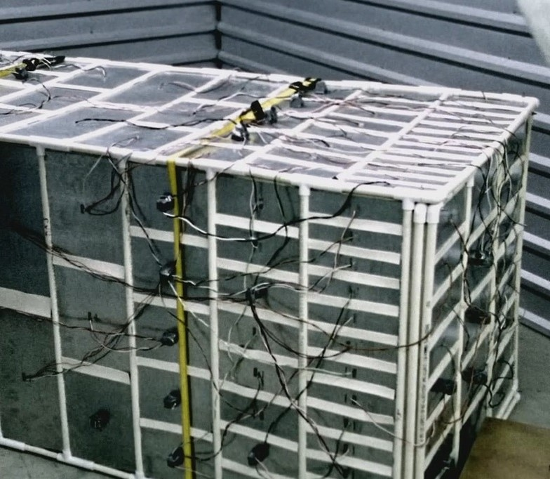

La caja
-

EL DISPOSITIVO QUE HACE POSIBLE LA PELICULA. Necesitad
La primera aparicion de este dispositivo es en el minuto 10:03 como prototipo y en el minuto 29:30 como diseño final. No existe una necesidad real para crear este dispositivo, de hecho, la pelicula se centra en como manejar este descubrimiento fortuito en un contexto realista. No aparece ningun otro dispositivo imaginado en la pelicula. Desde orto punto de vista, el dispositivo creado en esta pelicula tiene infinidad de usos, pero no todos serian usos positivos.
-
Tecnologias involucradas. Impacto
En cuanto el impacto, en la pelicula, el descubrimiento se manteiene en secreto, asi que no extiste ningun impacto en la sociedad. Pero para los protagonistas, el impacto del dispositivo cambia sus vidas por completo, hasta el punto de tener que renunciar a sus vidas tal y como son entonces. Las tecnologias involucradas son muy diversas, utilizan componentes muy asequibles y que se pueden encontrar en otros aparatos del dia a dia como neveras, automoviles... por lo que dan a entender que "la caja" es un producto que es realizable en un contexto realista a corto plazo -
Spitch - El uso ético de un dispositivo complicado
A continuación, un spitch (discruso breve) de un estudiante de la universidad de salamanca que nos expone las posibles utilidades de un dispositivo como el que aparece en la pelicula con fines morales y eticos
Hola, mi nombre es Pedro, mi empresa Emiba Devices, y esto es la caja blanca. Lo que he venido a presentaros es la primera máquina del tiempo funcional de la historia. La caja es un dispositivo, de un coste realmente bajo, que permite hacer viajes atrás en el tiempo. Su funcionamiento es realmente sencillo: La maquina será encendida y permanecerá encendida todo el tiempo que haga falta. En el momento que queramos viajar al pasado, deberemos introducirnos en la maquina, y apagarla, entonces empezaremos a viajar atrás en el tiempo, hasta, como muy tarde, el momento que la encendimos. Es realmente complicado pensar que una máquina del tiempo es necesaria en nuestro día a día, o tenga fines éticos, pero ¿era realmente necesario el teléfono móvil para nosotros antes de que este cayese en nuestras manos? ¿Se imaginan la cantidad de catástrofes que se pueden evitar si tuviésemos a alguien que nos avisara de cuando, como, donde y porqué se producen estos accidentes? Miles de agencias de seguridad en el mundo evitando accidentes de avión, tren, catástrofes naturales, etc... La idea ya está aquí, podemos salvar miles de vidas al año, solo necesitamos tu apoyo para llevarla a su máximo potencial. Apóyanos para ser parte de la mejor obra del futuro.